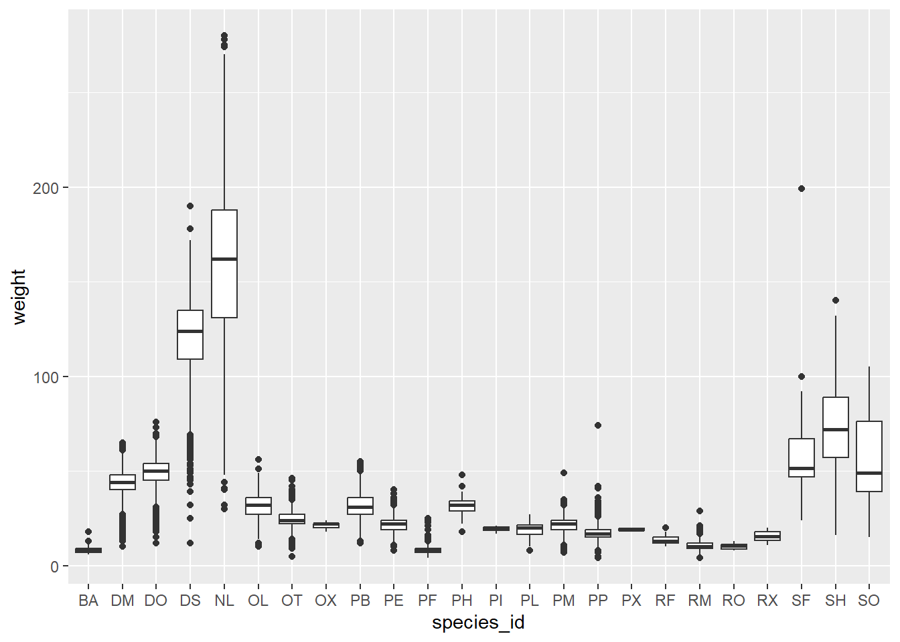

1 R
1.1 General Notes
- When writing R code, create a project instead of a file which will enable saving the workspace settings
- An R package usually includes:
- reusable functions
- documentation describing how to use the function
- sample data
- Before running a project, clear the objects in its workspace environment to avoid mixing up objects created in other files. This can be done either:
- pragmatically as shown below OR
- Environment window -> Broom icon
1.2 Clear Workspace
Always start by clearing the workspace. This ensure objects created in other files are not used used here.
1.3 Packages
1.3.1 List
List all the packages that will be used in this script.
1.3.2 Install Missing
Any missing package will be installed automatically. This ensure smoother execution when run by others.
1.3.3 Load
Load all packages
1.4 Data Types
- character
- numeric
- logical
- raw
- imaginary numbers
To know the datatype of an object, run the command:
1.4.1 Mixing Data Types
- character + numeric –> character
- numeric + logical –> numeric
- numeric + character + logical –> character
1.5 Data Structures
- vector: hold single type of data
The c() function (combine multiple elements) can be used to create vectors in R.
x <- c(1, 2, 3, 4)- matrix: 2D vector
- array: nD vector
- list: generic vector, can hold mixed type of data, eg, one element can a character, another a list of integers, and the third could be a logical
- data frame: table where columns represent vectors
-
tibbles: data frames, but slightly tweaked to work better with
tidyverse–when printing tibbles, only the first few columns that fit into the screen will be shown
To force the print() function to print all the columns of a tibble, set the width parameter to Inf as follows:
To construct small tibble by hand, use the tribble function as follows:
- factor

To know the data structure and length of the object, run the command:
1.6 Basics Operations
Assignment
[1] 3Getting Help
Dealing with Structure
# concatenate set of values to create vector
weight_g <- c(50, 60, 3, 9)
animals <- c("dog", "bat", "cat")
# utilizing logical values to pull specific values
weight_g[weight_g < 10 & weight_g > 60 | weight_g == 50][1] 50[1] "dog" "cat"[1] "dog" "cat"Statistics
1.7 Exploratory Operations
The here package makes it easy to point to files starting from the project main directory.
Loading file from repository and saving it locally on disk. It is always a good idea to structure the workspace–for more information, see Best Practices for Scientific Computing paper.
Load file to R as data frame
Inspecting data frame
'data.frame': 34786 obs. of 13 variables:
$ record_id : int 1 72 224 266 349 363 435 506 588 661 ...
$ month : int 7 8 9 10 11 11 12 1 2 3 ...
$ day : int 16 19 13 16 12 12 10 8 18 11 ...
$ year : int 1977 1977 1977 1977 1977 1977 1977 1978 1978 1978 ...
$ plot_id : int 2 2 2 2 2 2 2 2 2 2 ...
$ species_id : chr "NL" "NL" "NL" "NL" ...
$ sex : chr "M" "M" "" "" ...
$ hindfoot_length: int 32 31 NA NA NA NA NA NA NA NA ...
$ weight : int NA NA NA NA NA NA NA NA 218 NA ...
$ genus : chr "Neotoma" "Neotoma" "Neotoma" "Neotoma" ...
$ species : chr "albigula" "albigula" "albigula" "albigula" ...
$ taxa : chr "Rodent" "Rodent" "Rodent" "Rodent" ...
$ plot_type : chr "Control" "Control" "Control" "Control" ... record_id month day year plot_id
Min. : 1 Min. : 1.000 Min. : 1.0 Min. :1977 Min. : 1.00
1st Qu.: 8964 1st Qu.: 4.000 1st Qu.: 9.0 1st Qu.:1984 1st Qu.: 5.00
Median :17762 Median : 6.000 Median :16.0 Median :1990 Median :11.00
Mean :17804 Mean : 6.474 Mean :16.1 Mean :1990 Mean :11.34
3rd Qu.:26655 3rd Qu.:10.000 3rd Qu.:23.0 3rd Qu.:1997 3rd Qu.:17.00
Max. :35548 Max. :12.000 Max. :31.0 Max. :2002 Max. :24.00
species_id sex hindfoot_length weight
Length:34786 Length:34786 Min. : 2.00 Min. : 4.00
Class :character Class :character 1st Qu.:21.00 1st Qu.: 20.00
Mode :character Mode :character Median :32.00 Median : 37.00
Mean :29.29 Mean : 42.67
3rd Qu.:36.00 3rd Qu.: 48.00
Max. :70.00 Max. :280.00
NA's :3348 NA's :2503
genus species taxa plot_type
Length:34786 Length:34786 Length:34786 Length:34786
Class :character Class :character Class :character Class :character
Mode :character Mode :character Mode :character Mode :character
Show first/last few objects/records/rows
record_id month day year plot_id species_id sex hindfoot_length weight
1 1 7 16 1977 2 NL M 32 NA
2 72 8 19 1977 2 NL M 31 NA
3 224 9 13 1977 2 NL NA NA
4 266 10 16 1977 2 NL NA NA
5 349 11 12 1977 2 NL NA NA
6 363 11 12 1977 2 NL NA NA
genus species taxa plot_type
1 Neotoma albigula Rodent Control
2 Neotoma albigula Rodent Control
3 Neotoma albigula Rodent Control
4 Neotoma albigula Rodent Control
5 Neotoma albigula Rodent Control
6 Neotoma albigula Rodent Control record_id month day year plot_id species_id sex hindfoot_length weight
34781 26787 9 27 1997 7 PL F 21 16
34782 26966 10 25 1997 7 PL M 20 16
34783 27185 11 22 1997 7 PL F 21 22
34784 27792 5 2 1998 7 PL F 20 8
34785 28806 11 21 1998 7 PX NA NA
34786 30986 7 1 2000 7 PX NA NA
genus species taxa plot_type
34781 Peromyscus leucopus Rodent Rodent Exclosure
34782 Peromyscus leucopus Rodent Rodent Exclosure
34783 Peromyscus leucopus Rodent Rodent Exclosure
34784 Peromyscus leucopus Rodent Rodent Exclosure
34785 Chaetodipus sp. Rodent Rodent Exclosure
34786 Chaetodipus sp. Rodent Rodent Exclosure1.7.1 Retrieve specific element/row/column
[1] 1 record_id month day year plot_id species_id sex hindfoot_length weight
1 1 7 16 1977 2 NL M 32 NA
genus species taxa plot_type
1 Neotoma albigula Rodent Control[1] 1 72 224 266 349 363[1] "M" "M" "" "" "" "" 1.7.2 Dealing with factor (categorical) columns
R convert columns that contain characters to factors by default. Factors are treated as integer vectors. By default, R sorts levels in alphabetical order.
Reorder factors (to get better plots)
1.7.3 Basic Plotting
Histogram

Enhance the plot

1.8 Data Manipulation
-
tdlyr- makes manipulation of data easier
- built to work with data frames directly
- can directly work with data stored in an external database which give the advantage of only bringing what we need to the memory to work on without having to bring the whole database
-
tidyr- allows to swiftly convert b/w different data formats for plotting & analysis in order to accommodate the different requirements by different functions
- sometime we want one row per measurement
- other times we want the data aggregated like when plotting
- allows to swiftly convert b/w different data formats for plotting & analysis in order to accommodate the different requirements by different functions
Before using tdlyr and tidyr:
- Install
tidyversepackage: umbrella-package that install several packages (tidyr, dplyr, ggplot2 tibble, magrittr, etc.) - Load the package each session
Load packages
Load & inspect data
# notice the '_' instead of '.' of basic R
surveys <- read_csv(here("data", "portal_data_joined.csv"))Rows: 34786 Columns: 13
── Column specification ────────────────────────────────────────────────────────
Delimiter: ","
chr (6): species_id, sex, genus, species, taxa, plot_type
dbl (7): record_id, month, day, year, plot_id, hindfoot_length, weight
ℹ Use `spec()` to retrieve the full column specification for this data.
ℹ Specify the column types or set `show_col_types = FALSE` to quiet this message.spc_tbl_ [34,786 × 13] (S3: spec_tbl_df/tbl_df/tbl/data.frame)
$ record_id : num [1:34786] 1 72 224 266 349 363 435 506 588 661 ...
$ month : num [1:34786] 7 8 9 10 11 11 12 1 2 3 ...
$ day : num [1:34786] 16 19 13 16 12 12 10 8 18 11 ...
$ year : num [1:34786] 1977 1977 1977 1977 1977 ...
$ plot_id : num [1:34786] 2 2 2 2 2 2 2 2 2 2 ...
$ species_id : chr [1:34786] "NL" "NL" "NL" "NL" ...
$ sex : chr [1:34786] "M" "M" NA NA ...
$ hindfoot_length: num [1:34786] 32 31 NA NA NA NA NA NA NA NA ...
$ weight : num [1:34786] NA NA NA NA NA NA NA NA 218 NA ...
$ genus : chr [1:34786] "Neotoma" "Neotoma" "Neotoma" "Neotoma" ...
$ species : chr [1:34786] "albigula" "albigula" "albigula" "albigula" ...
$ taxa : chr [1:34786] "Rodent" "Rodent" "Rodent" "Rodent" ...
$ plot_type : chr [1:34786] "Control" "Control" "Control" "Control" ...
- attr(*, "spec")=
.. cols(
.. record_id = col_double(),
.. month = col_double(),
.. day = col_double(),
.. year = col_double(),
.. plot_id = col_double(),
.. species_id = col_character(),
.. sex = col_character(),
.. hindfoot_length = col_double(),
.. weight = col_double(),
.. genus = col_character(),
.. species = col_character(),
.. taxa = col_character(),
.. plot_type = col_character()
.. )
- attr(*, "problems")=<externalptr> 1.8.1 Selection
Select certain columns
# A tibble: 34,786 × 3
plot_id species_id weight
<dbl> <chr> <dbl>
1 2 NL NA
2 2 NL NA
3 2 NL NA
4 2 NL NA
5 2 NL NA
6 2 NL NA
7 2 NL NA
8 2 NL NA
9 2 NL 218
10 2 NL NA
# ℹ 34,776 more rowsSelect all columns except …
# A tibble: 34,786 × 12
record_id month day year plot_id species_id hindfoot_length weight genus
<dbl> <dbl> <dbl> <dbl> <dbl> <chr> <dbl> <dbl> <chr>
1 1 7 16 1977 2 NL 32 NA Neotoma
2 72 8 19 1977 2 NL 31 NA Neotoma
3 224 9 13 1977 2 NL NA NA Neotoma
4 266 10 16 1977 2 NL NA NA Neotoma
5 349 11 12 1977 2 NL NA NA Neotoma
6 363 11 12 1977 2 NL NA NA Neotoma
7 435 12 10 1977 2 NL NA NA Neotoma
8 506 1 8 1978 2 NL NA NA Neotoma
9 588 2 18 1978 2 NL NA 218 Neotoma
10 661 3 11 1978 2 NL NA NA Neotoma
# ℹ 34,776 more rows
# ℹ 3 more variables: species <chr>, taxa <chr>, plot_type <chr>Select rows based on criteria
# A tibble: 1,180 × 13
record_id month day year plot_id species_id sex hindfoot_length weight
<dbl> <dbl> <dbl> <dbl> <dbl> <chr> <chr> <dbl> <dbl>
1 22314 6 7 1995 2 NL M 34 NA
2 22728 9 23 1995 2 NL F 32 165
3 22899 10 28 1995 2 NL F 32 171
4 23032 12 2 1995 2 NL F 33 NA
5 22003 1 11 1995 2 DM M 37 41
6 22042 2 4 1995 2 DM F 36 45
7 22044 2 4 1995 2 DM M 37 46
8 22105 3 4 1995 2 DM F 37 49
9 22109 3 4 1995 2 DM M 37 46
10 22168 4 1 1995 2 DM M 36 48
# ℹ 1,170 more rows
# ℹ 4 more variables: genus <chr>, species <chr>, taxa <chr>, plot_type <chr>1.8.2 Piping
Sending the results of one function to another
# in multiple steps
survey_less5 <- filter(surveys, weight < 5)
survey_sml <- select(survey_less5, species_id, sex, weight)
# in one long step
survey_sml <- select(filter(surveys, weight < 5), species_id, sex, weight)
# using pipe %>% of magritter package. Use Ctrl + Shift + M to add
survey_sml <- surveys %>%
filter(weight < 5) %>%
select(species_id, sex, weight)1.8.3 Summary
Summary of groups (1+ columns)
one factor
# A tibble: 3 × 2
sex mean_weight
<chr> <dbl>
1 F 42.2
2 M 43.0
3 <NA> 64.7two factors
`summarise()` has grouped output by 'sex'. You can override using the `.groups`
argument.# A tibble: 81 × 3
# Groups: sex [3]
sex species mean_weight
<chr> <chr> <dbl>
1 F albigula 154.
2 F baileyi 30.2
3 F eremicus 22.8
4 F flavus 7.97
5 F fulvescens 13.7
6 F fulviventer 69
7 F hispidus 69.0
8 F leucogaster 31.1
9 F leucopus 19.3
10 F maniculatus 22.1
# ℹ 71 more rows`summarise()` has grouped output by 'species'. You can override using the
`.groups` argument.# A tibble: 81 × 3
# Groups: species [40]
species sex mean_weight
<chr> <chr> <dbl>
1 albigula F 154.
2 albigula M 166.
3 albigula <NA> 168.
4 audubonii <NA> NaN
5 baileyi F 30.2
6 baileyi M 33.8
7 baileyi <NA> 30.6
8 bilineata <NA> NaN
9 brunneicapillus <NA> NaN
10 chlorurus <NA> NaN
# ℹ 71 more rowsto avoid using na.rm = FALSE each statistics
surveys %>%
filter(!is.na(weight)) %>%
group_by(species, sex) %>%
summarise(mean_weight = mean(weight), sd_weight = sd(weight), sd_count = n())`summarise()` has grouped output by 'species'. You can override using the
`.groups` argument.# A tibble: 59 × 5
# Groups: species [22]
species sex mean_weight sd_weight sd_count
<chr> <chr> <dbl> <dbl> <int>
1 albigula F 154. 39.2 652
2 albigula M 166. 49.0 484
3 albigula <NA> 168. 44.2 16
4 baileyi F 30.2 5.27 1617
5 baileyi M 33.8 8.27 1188
6 baileyi <NA> 30.6 9.96 5
7 eremicus F 22.8 4.57 568
8 eremicus M 20.6 3.49 689
9 eremicus <NA> 17.7 0.577 3
10 flavus F 7.97 1.69 742
# ℹ 49 more rowsarrange by mean weight
surveys %>%
filter(!is.na(weight)) %>%
group_by(species, sex) %>%
summarise(mean_weight = mean(weight), sd_weight = sd(weight), sd_count = n()) %>%
arrange(mean_weight)`summarise()` has grouped output by 'species'. You can override using the
`.groups` argument.# A tibble: 59 × 5
# Groups: species [22]
species sex mean_weight sd_weight sd_count
<chr> <chr> <dbl> <dbl> <int>
1 flavus <NA> 6 1.63 4
2 taylori M 7.36 0.842 14
3 flavus M 7.89 1.59 802
4 flavus F 7.97 1.69 742
5 taylori F 9.16 2.24 31
6 montanus M 9.5 1.29 4
7 megalotis M 10.1 1.73 1339
8 montanus F 11 2.16 4
9 megalotis <NA> 11.1 2.57 12
10 megalotis F 11.1 2.56 1184
# ℹ 49 more rowsin descending order
surveys %>%
filter(!is.na(weight)) %>%
group_by(species, sex) %>%
summarise(mean_weight = mean(weight), sd_weight = sd(weight), sd_count = n()) %>%
arrange(desc(mean_weight))`summarise()` has grouped output by 'species'. You can override using the
`.groups` argument.# A tibble: 59 × 5
# Groups: species [22]
species sex mean_weight sd_weight sd_count
<chr> <chr> <dbl> <dbl> <int>
1 albigula <NA> 168. 44.2 16
2 albigula M 166. 49.0 484
3 albigula F 154. 39.2 652
4 hispidus <NA> 130 NA 1
5 spilosoma M 130 NA 1
6 spectabilis M 122. 24.0 1220
7 spectabilis <NA> 120 18.5 18
8 spectabilis F 118. 21.5 1106
9 fulviventer F 69 37.8 16
10 hispidus F 69.0 29.7 98
# ℹ 49 more rowsby count
surveys %>%
filter(!is.na(weight)) %>%
group_by(species, sex) %>%
summarise(mean_weight = mean(weight), sd_weight = sd(weight), sd_count = n()) %>%
arrange(sd_count)`summarise()` has grouped output by 'species'. You can override using the
`.groups` argument.# A tibble: 59 × 5
# Groups: species [22]
species sex mean_weight sd_weight sd_count
<chr> <chr> <dbl> <dbl> <int>
1 hispidus <NA> 130 NA 1
2 intermedius <NA> 18 NA 1
3 leucopus <NA> 25 NA 1
4 spilosoma F 57 NA 1
5 spilosoma M 130 NA 1
6 fulviventer <NA> 40.5 6.36 2
7 leucogaster <NA> 29 11.3 2
8 eremicus <NA> 17.7 0.577 3
9 ordii <NA> 50.7 6.51 3
10 sp. F 20.7 1.15 3
# ℹ 49 more rows1.8.4 Count
Count of a categorical column
1.8.5 Reshaping
Using gather & spreed
prepare the needed data first
surveys_gw <- surveys %>%
filter(!is.na(weight)) %>%
group_by(genus, plot_id) %>%
summarize(mean_weight = mean(weight))`summarise()` has grouped output by 'genus'. You can override using the
`.groups` argument.creating a 2D table where each dimension represent a category the cell will represent a statistics
tibble [24 × 11] (S3: tbl_df/tbl/data.frame)
$ plot_id : num [1:24] 1 2 3 4 5 6 7 8 9 10 ...
$ Baiomys : num [1:24] 7 6 8.61 NA 7.75 ...
$ Chaetodipus : num [1:24] 22.2 25.1 24.6 23 18 ...
$ Dipodomys : num [1:24] 60.2 55.7 52 57.5 51.1 ...
$ Neotoma : num [1:24] 156 169 158 164 190 ...
$ Onychomys : num [1:24] 27.7 26.9 26 28.1 27 ...
$ Perognathus : num [1:24] 9.62 6.95 7.51 7.82 8.66 ...
$ Peromyscus : num [1:24] 22.2 22.3 21.4 22.6 21.2 ...
$ Reithrodontomys: num [1:24] 11.4 10.7 10.5 10.3 11.2 ...
$ Sigmodon : num [1:24] NA 70.9 65.6 82 82.7 ...
$ Spermophilus : num [1:24] NA NA NA NA NA NA NA NA NA NA ...# A tibble: 6 × 11
plot_id Baiomys Chaetodipus Dipodomys Neotoma Onychomys Perognathus Peromyscus
<dbl> <dbl> <dbl> <dbl> <dbl> <dbl> <dbl> <dbl>
1 1 7 22.2 60.2 156. 27.7 9.62 22.2
2 2 6 25.1 55.7 169. 26.9 6.95 22.3
3 3 8.61 24.6 52.0 158. 26.0 7.51 21.4
4 4 NA 23.0 57.5 164. 28.1 7.82 22.6
5 5 7.75 18.0 51.1 190. 27.0 8.66 21.2
6 6 NA 24.9 58.6 180. 25.9 7.81 21.8
# ℹ 3 more variables: Reithrodontomys <dbl>, Sigmodon <dbl>, Spermophilus <dbl>bring spread back
tibble [240 × 3] (S3: tbl_df/tbl/data.frame)
$ plot_id : num [1:240] 1 2 3 4 5 6 7 8 9 10 ...
$ genus : chr [1:240] "Baiomys" "Baiomys" "Baiomys" "Baiomys" ...
$ mean_weight: num [1:240] 7 6 8.61 NA 7.75 ...# A tibble: 6 × 3
plot_id genus mean_weight
<dbl> <chr> <dbl>
1 1 Baiomys 7
2 2 Baiomys 6
3 3 Baiomys 8.61
4 4 Baiomys NA
5 5 Baiomys 7.75
6 6 Baiomys NA 1.8.6 Filtering
Remove missing data
Filter those that has sample greater than 50
filter only those in the indicated category
1.8.7 Saving to disk
1.9 Visualization
- Help in making complex plots from data frames in simple steps
- ggplot graphics are built step by step by adding new elements; this makes it flexible as well as customization
Step 1: Bind the plot to specific data frame
Step 2: Select the type of the plot
- scatter plot, dot plots, etc. > geom_point()
- boxplots > geom_boxplot()
- trend lines, time series, etc. > geom_line()
1.9.1 Scatter plot


1.9.2 Boxplot


1.9.3 Time series data
# create appropriate dataset
yearly_count <- survey_complete %>%
count(year, species_id)
surveys_plot <- ggplot(
data = yearly_count,
mapping = aes(x = year, y = n)
)
surveys_plot + geom_line()
# make it more meaningful by breaking it by category
surveys_plot + geom_line(aes(group = species_id))
`geom_line()`: Each group consists of only one observation.
ℹ Do you need to adjust the group aesthetic?
# split the line in each plot by sex
yearly_sex_counts <- survey_complete %>%
count(year, species_id, sex)
surveys_plot <- ggplot(
data = yearly_sex_counts,
mapping = aes(x = year, y = n)
)
surveys_plot + geom_line(aes(color = sex)) +
facet_wrap(~species_id)`geom_line()`: Each group consists of only one observation.
ℹ Do you need to adjust the group aesthetic?
# remove background
surveys_plot + geom_line(aes(color = sex)) +
facet_wrap(~species_id) +
theme_bw() +
theme(panel.grid = element_blank())`geom_line()`: Each group consists of only one observation.
ℹ Do you need to adjust the group aesthetic?
1.10 References
- OU Software Carpentry Workshop (check other workshops here)
- Intro to ggplot by Allison Horst
- R for Data Science book by Garrett Grolemund and Hadley Wickham
- Best Practices for Scientific Computing paper